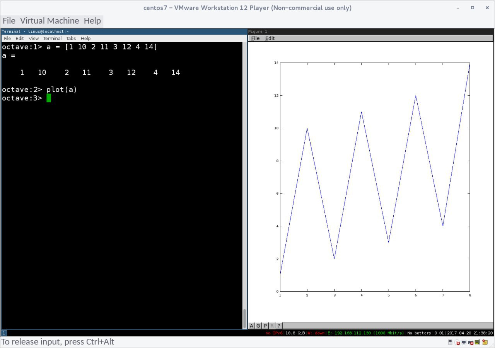

Conversation with newb central at Thu 20 Apr 2017 10:01:56 AEST on +61410193313 (telegram)
(10:01:56) List of 4 users:
[ Eddie Y ][ Monica Lolham ][ rlolham ][ Shant ]
(10:01:55) Eddie Y: tried out matlab for linux yesterday... ❤️
(10:02:33) Eddie Y: so easy to plot graphs in it and it has a *TON* of functions for all sorts of enginerering and scientific stuff.
(10:03:36) Eddie Y: it's this easy:
x = 0:100:1
(10:03:39) Eddie Y: plot(x)
(10:04:01) Eddie Y: so it goes from 0 to 100, increasing by 1 each step of the loop, then plots it on a bode plot.
(10:04:59) Eddie Y: I don't know why it takes 4gb of space to do that, malware for sure, but I'm running it in a vm with no net access to it so it'll do for now I guess.
(10:23:28) Shant: ooooo
(10:23:37) Shant: kinda junk im usin these days
(10:23:44) Shant: qlikview/sas jmp
(10:24:20) Eddie Y: I just found another one called GNU Octave. going to try it out right now.
(10:24:33) Eddie Y: qlikview looks pretty good
(10:29:58) Eddie Y: there's another one called sage, made with python and its language mimics python. pretty neat. anyway, just installed octave ! going to try it out.
(10:35:49) Eddie Y:

gnu octave is fucking elite
(10:36:21) Eddie Y: 226mb and it's meant to be a matlab clone. samge language, same plugins etc.. I think I'm sold on it.
(10:37:03) Eddie Y: can't believe I've never heard of this octave before. so awesome :D
(10:41:08) Shant: oooo nice nice
(10:41:41) Shant: http://insights.dice.com/2012/05/16/r-octave-python-suits-your-analysis-needs/
(10:42:21) Shant: https://www.quora.com/Should-I-switch-to-R-from-Octave
(10:42:26) Shant: still python ftw, heh
(10:42:32) Shant: should get back into it :/
(10:42:51) Shant: https://www.linkedin.com/pulse/r-vs-python-matlab-octave-julia-who-winner-siva-prasad-katru
(10:43:50) Shant: oh oh
(10:43:55) Shant: was gonna send yesterday but forgot
(10:43:58) Shant: https://www.reddit.com/r/MachineLearning/comments/665flm/p_selfdriving_car_course_with_python_tensorflow/
(11:03:22) Eddie Y: all those sites keep comparing python to R and matlab/octave. not even the same thing.
(11:03:50) Eddie Y: here's a bar graph in R:
cars <- c(1, 3, 6, 4, 9)
plot(cars, type="o", col="blue")
(11:04:13) Eddie Y: here's one in octave/matlab
x = [1 2 3 4]
bar(b)
(11:04:37) Eddie Y: here's one in python:
import matplotlib.pyplot as plt
plt.rcdefaults()
import numpy as np
import matplotlib.pyplot as plt
plt.rcdefaults()
fig, ax = plt.subplots()
# Example data
people = ('Tom', 'Dick', 'Harry', 'Slim', 'Jim')
y_pos = np.arange(len(people))
performance = 3 + 10 * np.random.rand(len(people))
error = np.random.rand(len(people))
ax.barh(y_pos, performance, xerr=error, align='center',
color='green', ecolor='black')
ax.set_yticks(y_pos)
ax.set_yticklabels(people)
ax.invert_yaxis() # labels read top-to-bottom
ax.set_xlabel('Performance')
ax.set_title('How fast do you want to go today?')
plt.show()
(11:05:07) Eddie Y: big diff
(11:07:21) Eddie Y: literally just 2 lines in R and octave
(11:09:25) Eddie Y: but python would allow much finer-grained control over every bit of data, being a full on general purpose programming language.
(11:15:08) Shant: yeah thats kinda what i mean tho
(11:15:28) Shant: learning language that just does what R/oct can do is a bit of a waste of time imo
(11:15:47) Shant: imo anyway, im still using excel/power query lol
(11:16:36) Shant: tho its all a bit of a waste for me anyways, i get the data in so many different formats
(11:16:42) Shant: dont think i have a choice but to sort manually :/
(11:17:19) Shant: but yeah, im still a newb at it all really, the datasets im workin with only get maybe 100,000 lines max
(11:19:36) Eddie Y: you'd have to make something that extracts data from everything into a single format to feed into other programs. fun, but risky :D
(11:19:42) Eddie Y: probably safer to do it manually lol
(11:20:22) Eddie Y: maybe if the programs can output csv, would make life a lot easier to export stuff
(11:24:57) Eddie Y: I have no idea what I'm talking about pretty much LOL
(11:46:46) Shant: hahah, yeah i mean
(11:46:52) Shant: i dunno, its a matter of working on it for ages
(11:46:58) Shant: and like, cbf i guess haha
(12:17:19) The account has disconnected and you are no longer in this chat. You will be automatically rejoined in the chat when the account reconnects.